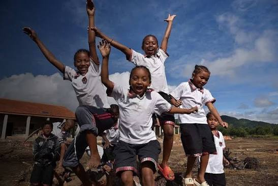
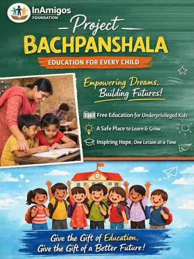
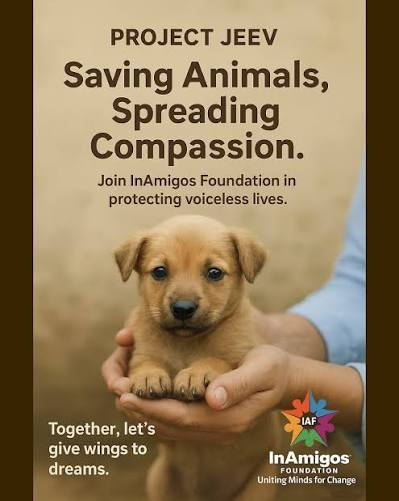
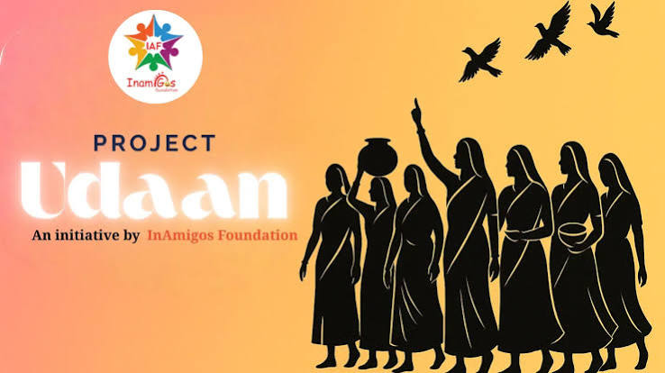
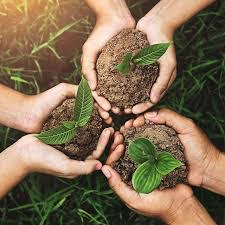

01
Seva
Food & Essential Support
Supporting people in need through food, clothing and essential resources.
Learn More →Together, we can create meaningful social impact through education, empowerment, community support, animal welfare and environmental initiatives.

InAmigos Foundation is a Section 8 non-profit organization founded in 2020 with a focus on creating meaningful social impact across India.
Through community initiatives, volunteers and dedicated programs, the organization works across education, welfare, women empowerment, animal care, environmental conservation and skill development.
Explore the initiatives through which InAmigos works with communities and creates social impact.
Supporting people in need through food, clothing and essential resources.
Learn More →
Creating learning opportunities and supporting children through education.
Learn More →
Working towards the welfare and care of vulnerable and stray animals.
Learn More →
Helping women develop skills, confidence and opportunities for greater independence.
Learn More →
Promoting environmental awareness, plantation and sustainable practices.
Learn More →
Providing opportunities for learning, professional development and practical skills.
Learn More →Every initiative is driven by people who believe that meaningful change begins with collective action.
Supporting communities through essential resources and outreach.
Contributing towards greener and more sustainable communities.
Creating opportunities for young people to learn and develop skills.
Supporting children's education and learning opportunities.
*Impact figures should be verified against the latest official InAmigos Foundation information before final submission.
Every contribution matters. Join the community, volunteer your skills or support initiatives that are working towards meaningful social change.
Become a Volunteer →